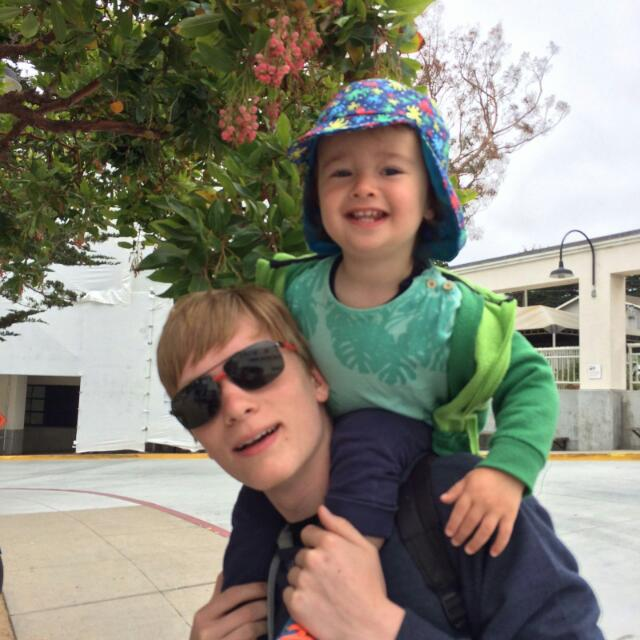
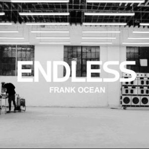
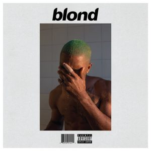

Jeroen Jagt
Student on Earth
In 17 years I have gone to school for most of the time. Now deciding what to study while exploring more of the world for a year.
Albums by Frank Ocean

|
channel ORANGE was released in 2012 and very popular. It sounds flawless and almost reads like a novel. |
|  |
Endless is a visual album released in 2016, just days prior to Blonde. It shows Frank building a staircase in a warehouse, with songs playing. It's a soft flow of music and creativeness by Frank. |
|  |
Blonde is Frank's latest release (2016). Whereas channel ORANGE felt like a novel, Blonde seems more like an autobiography - in poetic musical form. It's a perfect autumn album. |